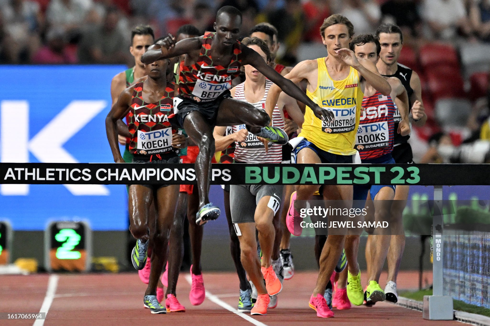

About Me
Leonard Kipkemoi Bett is a professional Kenyan track athlete specializing in the 3000m steeplechase. With a personal best of 8:06.33, he has represented Kenya at major global championships including the Olympics and World Championships.


Leonard Kipkemoi Bett is a professional Kenyan track athlete specializing in the 3000m steeplechase. With a personal best of 8:06.33, he has represented Kenya at major global championships including the Olympics and World Championships.
I am proudly sponsored by Adidas, whose continuous support empowers my performance on and off the track.